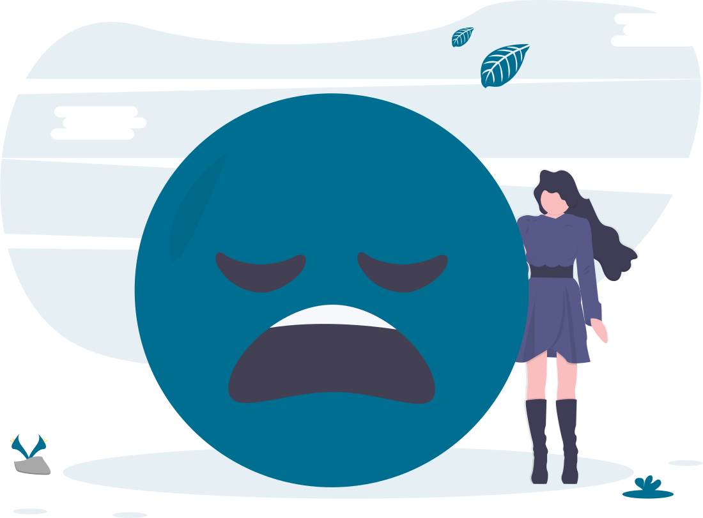

<app-header></app-header>
<div class="row justify-content-center content-container">
    <div class="col-xs-12 col-md-10 col-lg-7 col-xxl-5">
        <h2>Ensembles</h2>
        <div class="options-container">
            <h3 class="curr-page">Find</h3>
            <a class="create-page-link" routerLink="/ensembles-create"><h3>Create</h3></a>
        </div>
        <div style="z-index: 1" class="filters-container">
            <div class="dropdown">
                <button *ngIf="!sizeFilter && !hugeEnsembleFilter" type="button" class="btn filter-button" (clickOutside)="onCloseDropdown1()" (click)="onDisplayDropdown1()">
                    Any Size
                    
                </button>
                <button *ngIf="sizeFilter" type="button" class="btn filter-button" (clickOutside)="onCloseDropdown1()" (click)="onDisplayDropdown1()">
                    {{ sizeFilter }}
                    
                </button>
                <button *ngIf="!sizeFilter && hugeEnsembleFilter" type="button" class="btn filter-button" (clickOutside)="onCloseDropdown1()" (click)="onDisplayDropdown1()">
                    10+
                    
                </button>
                <div class="dropdown-options"  [ngStyle]="{'display' : displayDropdown1}">
                    <div class="dropdown-options-container">
                        <a (click)="onSetSizeFilter(2)" class="dropdown-item">2</a>
                        <a (click)="onSetSizeFilter(3)" class="dropdown-item">3</a>
                        <a (click)="onSetSizeFilter(4)" class="dropdown-item">4</a>
                        <a (click)="onSetSizeFilter(5)" class="dropdown-item">5</a>
                        <a (click)="onSetSizeFilter(6)" class="dropdown-item">6</a>
                        <a (click)="onSetSizeFilter(7)" class="dropdown-item">7</a>
                        <a (click)="onSetSizeFilter(8)" class="dropdown-item">8</a>
                        <a (click)="onSetSizeFilter(9)" class="dropdown-item">9</a>
                        <a (click)="onHugeEnsembleFilter()"class="dropdown-item">10+</a>
                    </div>
                </div>
            </div>
            <div class="dropdown">
                <button *ngIf="!genreFilter" type="button" class="btn filter-button" (clickOutside)="onCloseDropdown2()" (click)="onDisplayDropdown2()">
                    Any Genre
                    
                </button>
                <button *ngIf="genreFilter" type="button" class="btn filter-button" (clickOutside)="onCloseDropdown2()" (click)="onDisplayDropdown2()">
                    {{ genreFilter }}
                    
                </button>
                <div class="dropdown-options" [ngStyle]="{'display' : displayDropdown2}">
                    <div class="dropdown-options-container">
                        <a (click)="onSetGenreFilter('Baroque')" class="dropdown-item">Baroque</a>
                        <a (click)="onSetGenreFilter('Choir')" class="dropdown-item">Choir</a>
                        <a (click)="onSetGenreFilter('Classical')" class="dropdown-item">Classical</a>
                        <a (click)="onSetGenreFilter('Contemporary')" class="dropdown-item">Contemporary</a>
                        <a (click)="onSetGenreFilter('Country')" class="dropdown-item">Country</a>
                        <a (click)="onSetGenreFilter('Romantic')" class="dropdown-item">Romantic</a>
                        <a (click)="onSetGenreFilter('Folk')" class="dropdown-item">Folk</a>
                        <a (click)="onSetGenreFilter('Jazz')" class="dropdown-item">Jazz</a>
                        <a (click)="onSetGenreFilter('Rock')" class="dropdown-item">Rock</a>
                    </div>
                </div>
            </div>
            <div class="dropdown">
                <button *ngIf="!instrumentFilter" type="button" class="btn filter-button" (clickOutside)="onCloseDropdown3()" (click)="onDisplayDropdown3()">
                    Any Instrument
                    
                </button>
                <button *ngIf="instrumentFilter" type="button" class="btn filter-button" (clickOutside)="onCloseDropdown3()" (click)="onDisplayDropdown3()">
                    {{ instrumentFilter }}
                    
                </button>
                <div class="dropdown-options"  [ngStyle]="{'display' : displayDropdown3}">
                    <div class="dropdown-options-container">
                            <a (click)="onSetInstrumentFilter('Accordion')" class="dropdown-item">Accordion</a>
                            <a (click)="onSetInstrumentFilter('Alto Saxophone')" class="dropdown-item">Alto Saxophone</a>
                            <a (click)="onSetInstrumentFilter('Baritone Saxophone')" class="dropdown-item">Baritone Saxophone</a>
                            <a (click)="onSetInstrumentFilter('Bass Clarinet')" class="dropdown-item">Bass Clarinet</a>
                            <a (click)="onSetInstrumentFilter('Bass Guitar')" class="dropdown-item">Bass Guitar</a>
                            <a (click)="onSetInstrumentFilter('Bassoon')" class="dropdown-item">Bassoon</a>
                            <a (click)="onSetInstrumentFilter('Cello')" class="dropdown-item">Cello</a>
                            <a (click)="onSetInstrumentFilter('Clarinet')" class="dropdown-item">Clarinet</a>
                            <a (click)="onSetInstrumentFilter('Double Bass')" class="dropdown-item">Double Bass</a>
                            <a (click)="onSetInstrumentFilter('Drumset')" class="dropdown-item">Drumset</a>
                            <a (click)="onSetInstrumentFilter('Euphonium')" class="dropdown-item">Euphonium</a>
                            <a (click)="onSetInstrumentFilter('Flute')" class="dropdown-item">Flute</a>
                            <a (click)="onSetInstrumentFilter('French Horn')" class="dropdown-item">French Horn</a>
                            <a (click)="onSetInstrumentFilter('Guitar')" class="dropdown-item">Guitar</a>  
                            <a (click)="onSetInstrumentFilter('Harp')" class="dropdown-item">Harp</a>
                            <a (click)="onSetInstrumentFilter('Marimba')" class="dropdown-item">Marimba</a>
                            <a (click)="onSetInstrumentFilter('Oboe')" class="dropdown-item">Oboe</a>
                            <a (click)="onSetInstrumentFilter('Organ')" class="dropdown-item">Organ</a>
                            <a (click)="onSetInstrumentFilter('Piano')" class="dropdown-item">Piano</a>
                            <a (click)="onSetInstrumentFilter('Piccolo')" class="dropdown-item">Piccolo</a>
                            <a (click)="onSetInstrumentFilter('Recorder')" class="dropdown-item">Recorder</a>
                            <a (click)="onSetInstrumentFilter('Soprano Saxophone')" class="dropdown-item">Soprano Saxophone</a>
                            <a (click)="onSetInstrumentFilter('Timpani')" class="dropdown-item">Timpani</a>
                            <a (click)="onSetInstrumentFilter('Triangle')" class="dropdown-item">Triangle</a>
                            <a (click)="onSetInstrumentFilter('Trombone')" class="dropdown-item">Trombone</a>
                            <a (click)="onSetInstrumentFilter('Trumpet')" class="dropdown-item">Trumpet</a>
                            <a (click)="onSetInstrumentFilter('Tuba')" class="dropdown-item">Tuba</a>
                            <a (click)="onSetInstrumentFilter('Ukelele')" class="dropdown-item">Ukelele</a>
                            <a (click)="onSetInstrumentFilter('Vibraphone')" class="dropdown-item">Vibraphone</a>
                            <a (click)="onSetInstrumentFilter('Viola')" class="dropdown-item">Viola</a>
                            <a (click)="onSetInstrumentFilter('Violin')" class="dropdown-item">Violin</a>
                            <a (click)="onSetInstrumentFilter('Xylophone')"class="dropdown-item">Xylophone</a>
                    </div>
                </div>
            </div>
            <button *ngIf="sizeFilter || hugeEnsembleFilter || genreFilter || instrumentFilter" (click)="onClearFilters()" class="btn btn-danger filter-clear">
                Clear Filters
            </button>
        </div>
        <ul *ngIf="ensembles" stlye="z-index: 2" class="list-group">
            <app-ensembles-item 
                *ngFor="let ensemble of ensembles" 
                [ensembleObj]="ensemble"
                >
            </app-ensembles-item>           
        </ul>
        <div *ngIf="!ensembles" class="no-ensembles">
            <div>No active ensembles right now. Check back soon!</div>
            
        </div>
    </div>
</div>